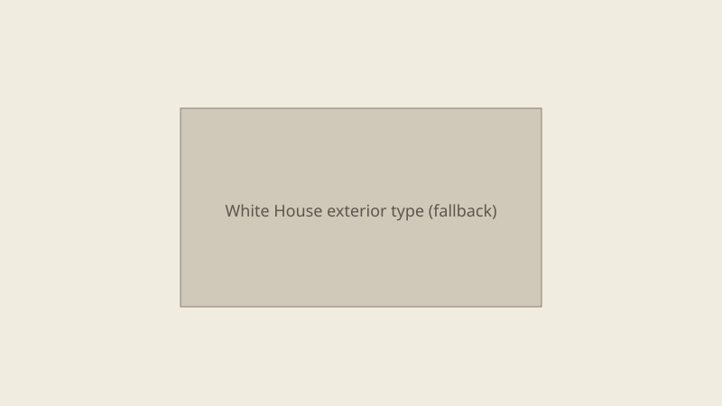

Washington · government communications · 28 September 2026
The White House expanded a series of taxpayer-funded advertisements that reuse campaign-style rhetoric and imagery.

What is agreed across desks
Multiple outlets reported that the White House has aired and expanded a series of television and digital spots paid for by the U.S. government. The ads feature President Trump’s voice and imagery and language previously used in his political campaigns, including references to defeating “communism, socialism, and Marxism,” a “final battle,” and expelling “warmongers” from government. The spots end with a “Paid for by the U.S. Government” disclaimer. White House officials have described the material as public-service announcements that are educational and patriotic; they have rejected the characterisation that the ads are political campaign material.
Reporting by The Washington Post, The Atlantic, and NBC News documented the content of at least two versions: one set to the song “Love Me” and another hallway walk with audio about a “final battle.” Comparison with 2024 campaign ads showed substantial overlap in rhetoric and visual style, with the government disclaimer substituted for campaign logos and calls to join a political fight.
What is only a quote
The White House assertion that the ads are “clearly not political” is an official characterisation. Whether that characterisation satisfies statutory or regulatory limits on the use of appropriated funds for publicity or propaganda is a legal and oversight question that the published reporting does not resolve. Critics’ labels of the spots as campaign ads are opinion or legal argument, not findings of a court or inspector general in the material reviewed for this dossier.
Mechanism a reader needs
Federal agencies routinely produce public-service and informational materials with appropriated funds. Long-standing restrictions exist on using those funds for purely partisan political activity or for materials that are not primarily informational. The precise boundary is policed by a combination of statute, Office of Management and Budget guidance, and occasional inspector-general or congressional review. When a sitting president’s voice and prior campaign language appear in government-funded spots, the question becomes whether the content remains within the informational exception or crosses into prohibited publicity for a political purpose.
Disclaimers such as “Paid for by the U.S. Government” identify the funding source; they do not by themselves determine legality. The Hatch Act and related rules constrain political activity by federal employees, but the production of official communications is a separate lane. Resolution of any dispute would typically require either internal compliance review, a formal complaint to an oversight body, or litigation—none of which had produced a published final determination as of 28 September.
What this story is not
It is not a finding that the ads are illegal. It is not a claim about their effectiveness or cost total. It is not a photograph of the advertisement itself. The hero image is a neutral exterior of the building from which the communications originate.

Source articles and scores
| Outlet | Headline | T | N | C |
|---|---|---|---|---|
| Washington Post | White House expands taxpayer-paid ad campaign boosting Trump | 90 | −15 | 85 |
| The Atlantic | Trump’s Public Service Announcement: ‘Love Me’ | 88 | −20 | 80 |
| NBC News | White House releases new taxpayer-funded ad describing ‘final battle’ | 91 | −10 | 88 |
Images: Wikimedia Commons exterior still via Special:FilePath; local SVG. Captions distinguish type from event. No crossorigin.